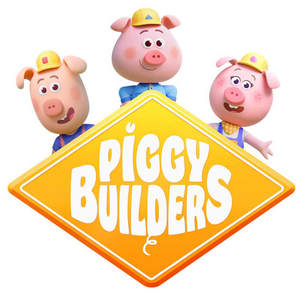

Trade Mark Journal No.2025/010 7 March 2025
UK00004164797 24 February 2025 (9,16,24,25,28,38,41)

International priority date claimed: 9 January 2025
(European Union Intellectual Property Office (EUIPO))
(019129165)
- Class 9
- Videotapes; Animated cartoons; Data carriers containing stored typographic typefaces; Sound and picture recording apparatus; Apparatus for recording images; Sound recording apparatus; Sound transmitting apparatus; Apparatus for the transmission of images; Apparatus for the reproduction of images; Sound reproduction apparatus; Portable sound reproducing apparatus; Audio discs; Videodiscs; Compact discs [audio-video]; Video compact discs; Audio compact discs; Optical discs; Compact discs [read-only memory]; Cameras [photography]; Cinematographic cameras; Teaching apparatus; Software; Games software; Video cassettes; DVDs; Digital recording media; Digital recordings; Computer programs, downloadable; Computer games programmes downloaded via the internet [software]; Computer programs, downloadable; Downloadable computer game programs; Mobile telephones; Calculators; Audio books; Phonograph records; Downloadable applications for use with mobile devices; Mobile apps; Downloadable mobile applications for the management of information; Educational mobile applications; Software and applications for mobile devices; Downloadable mobile applications for use with wearable computer devices; Downloadable mobile applications for the management of data; Downloadable mobile applications for the transmission of information; Decorative magnets; Phonograph records; Compact discs; Compact discs; Computer discs; Computer programs, recorded; Educational software; Children's educational software; Educational software featuring instructions for playing games; Eyewear; Spectacle cases; Computers; Tablet computers; Smartphones; Computer software, recorded; Computer peripheral devices; Smartwatches; Bags adapted for laptops.
- Class 16
- Paper; Cardboard; Trading cards, other than for games; Greeting cards; Document files [stationery]; Placards of paper or cardboard; Paper sheets [stationery]; Wrapping paper; Copying paper [stationery]; Announcement cards [stationery]; Passport holders; Passport cases; Printed matter; Bookbinding material; Stationery; Office requisites, except furniture; Office requisites, except furniture; Paper shredders for office use; Paper shredders for office use; Desk organisers; Clipboards; Correcting fluids [office requisites]; Pens [office requisites]; Document laminators for office use; Printing sets, portable [office requisites]; Correcting tapes [office requisites]; Office paper stationery; Office staplers; Punches [office requisites]; Office hole punchers; Files [office requisites]; Paper racks [office requisites]; File sorters [office requisites]; Name badges [office requisites]; Badge holders [office requisites]; Desktop cabinets for stationery [office requisites]; Desktop cabinets for stationery [office requisites]; Magnetic boards being office requisites; Photographs [printed]; Adhesives for stationery; Pastes and other adhesives for stationery or household purposes; Self-adhesive tapes for stationery or household purposes; Adhesive tape cutters being stationery; Adhesive tape dispensers for household or stationery use; Adhesive tape dispensers [office requisites]; Adhesive tapes for stationery or household purposes; Adhesive-backed letters and numbers; Adhesive note pads; Posters; Advertisement boards of paper or cardboard; Albums; Aquarelles; Writing slates; Lithographic works of art; Engravings; Stickers [stationery]; Comics; Bibs of paper; Comic books; Pads [stationery]; Drawing pads; Boxes of paper or cardboard; Pamphlets; Writing or drawing books; Children's activity books; School writing books; Notebook paper; Exercise-book covers; Activity books; Spiral-bound notebooks; Calendars; Tracing patterns; Note books; Cards; Musical greeting cards; Catalogues; Song books; Folders for papers; Binders; Letter trays; Conical paper bags; Chalks for colouring; Chalks for drawing; Blackboard erasers [chalk erasers]; Crayons; Pastels [crayons]; Lithographs; Adhesives for stationery or household purposes; Pencils; Pencil sharpeners; Transfers [decalcomanias]; Graphic prints; Inkstands; Hygienic hand towels of paper; Towels of paper; Drawing materials; Writing materials; Artists' watercolour saucers; Sewing patterns; Erasers; Envelopes [stationery]; Figurines of papier mâché; School supplies [stationery]; Pictures; Printed matter; Writing instruments; Newspapers; Writing paper; Table linen of paper; Books; Booklets; Manuals [handbooks]; Journals; Bookmarkers; Embroidery designs [patterns]; Tablecloths of paper; Palettes for painters; Paintbrushes; Drawing boards; Engraving plates; Indexes; Bags [envelopes, pouches] of paper or plastics, for packaging; Bags [envelopes, pouches] of paper or plastics, for packaging; Desk mats; Calendar desk pads; Fountain pens; Periodicals; Stencil plates; Pencil holders; Printed publications; Promotional publications; Promotional publications; Educational publications; Periodicals; Periodicals; Drawing pins; Drawing rulers; Graphic representations; Bookends; Bookmarkers; Figurines of papier mâché; Ink stamps; Cases for stationery; Pouches for writing instruments; Drawing sets; Pencil cases; Pencil lead holders; Signboards of paper or cardboard; Postcards; Collages; Colouring books; Sticker activity books; Magnetic boards for scheduling activities and appointments; Printed teaching activity guides; Agendas; Adhesive labels; Labels of paper; Printed luggage labels; Adhesive printed labels; Labels of paper or cardboard; Address labels; Gift tags; Paper identification tags; Shipping labels; Timetables; Map cases; Magazines [periodicals]; Prospectuses; Children's paint-boxes; Paintings; Brushes for the application of paints; Pictures in the nature of paintings; Engravings and their reproductions; Pencil tins; Pen and pencil boxes; Paper tissues; Towels of paper; Face towels of paper.
- Class 24
- Beach towels; Textiles; Bed blankets; Lap rugs; Hand towels; Household linen, including face towels; Hooded towels; Turkish towel; Towels of textile; Towels of textile; Children's towels; Table napkins of textile; Bath towels; Bed linen; Cot blankets; Silk blankets; Children's blankets; Bed pads; Cotton blankets; Picnic blankets; Bed covers; Bed covers; Sheets [textile]; Contour sheets; Pillowcases; Comforters; Quilts filled with down; Mattress covers; Crib canopies; Mosquito nets; Pillow shams; Sleeping bags [sheeting]; Cloth; Table covers; Doilies of textile; Table napkins of textile; Kitchen linen; Dish cloths of textile for drying; Towels [textile] for kitchen use; Bath gloves; Curtains; Textile tissues; Bath linen, except clothing; Covers for cushions; Curtains for showers.
- Class 25
- Beach hats; Sandals and beach shoes; Beach robes; Beach clothes; Clothing; Headgear; Slippers; Clothing; Pocket squares; Cuffs; Neckwear; Belts [clothing]; Money belts [clothing]; Headbands [clothing]; Gloves with conductive fingertips that may be worn while using handheld electronic touch screen devices; Ear muffs [clothing]; Gloves [clothing]; Bathing caps; Bathing trunks; Bathing suits; Bathing suits; Bath sandals; Shoes; Hats with a clip; Bibs, not of paper; Berets; Chemise tops; Stocking caps; Boots; Ankle boots; Braces [suspenders] for clothing; Neck tube scarves; Boxer shorts; Caps being headwear; Waist belts; Dressing gowns; Sweaters; Hats; Socks; Shoes; Shirts; Short-sleeve shirts; Tights; Collars [clothing]; Coverups; Underwear; Suits; Masquerade costumes; Neckties; Knickers; Sashes for wear; Espadrilles; Gloves [clothing]; Waistcoats; Waterproof clothing; Skirts; Petticoats; Sports jerseys; Coats; Trousers; Slippers; Overcoats; Parkas; Dressing gowns; Pyjamas; Sweaters; Underpants; Dresses; Tee-shirts; Pinafores; Underwear; Knit shirts; Uniforms; Jackets [clothing]; Sweat shirts; Flip-flops; Polo shirts.
- Class 28
- Beach balls; Games; Toys; Gymnastic and sporting articles; Swings; Balls for games; Balls for games; Marbles for games; Marbles for games; Building blocks [toys]; Balls for playing boules games; Percussion caps [toys]; Playing cards; Kites; Rocking horses; Targets; Bells for Christmas trees; Party favor hats; Novelty toys for parties; Draughtboards; Festive decorations, party novelties and artificial Christmas trees; Flying discs [toys]; Chessboards; Novelty toys for playing jokes; Darts; Cups for dice; Rattles [playthings]; Ring games; Paddle ball games; Nets for ball games; Nets for ball games; Boule games; Building games; Draughts [games]; Dominoes; Chess games; Table-top games; Automatic electronic games; Electronic games other than those adapted for use with television receivers only; Arcade games (electronic -) [coin or counter operated apparatus]; Coin-operated electronic amusement apparatus; Hand-held electronic games; Hand-held electronic games; Electronic games; Hand-held electronic video games; Hand-held units for playing electronic games; Hand-held units for playing electronic games; Electronic hand-held game units; Electronic educational teaching games; Electronic board games; Electronic dart games; Apparatus for electronic games adapted for use with an external display screen or monitor; Electronic games apparatus; Electronic educational game machines for children; Electronic educational game machines for children; Toys for pets; Counters [discs] for games; Dolls' beds; Puppets; Toy mobiles; Crib mobiles [toys]; Model vehicles; Teddy bears; Roller skates; Ice skates; Plush toys; Toy pistols; Skateboards; Dolls; Jigsaw puzzles; Soap bubbles [toys]; Toboggans; Toy vehicles; Spinning tops [toys]; Scooters [toys]; Backgammon games; Board games; Toy gun holsters; Water pistols [playthings]; Money guns being toys; Toys adapted for educational purposes; Children's multiple activity toy; Electronic activity toys; Bodysurfing boards; Rackets; Costume masks; Carnival masks; Fishing tackle; Toy models; Toy figures; Toy robots.
- Class 38
- Communications by telephone; Radio telephone communication services; Communications by computer terminals; Communication via computer terminals, by digital transmission or by satellite; Telecommunications by computer terminals, via telematics, satellites, radios, telegraphs, telephones; Dissemination of television programmes relayed by cable link to television receivers; Dissemination of television programmes relayed by microwave link to television receivers; Pay-per-view television transmission services; Television broadcasting; Transmission of interactive television program guides; Communications by fibre optic networks; Television broadcasting; Telematic communication services; Telematics services; Data transmission services over telematic networks; Data transmission services over telematic networks; Data transmission services over telematic networks; Transmission of information via computers connected to the same telematic network; Telematic communications via computer terminals; Telematic [data communication] services; International data transmission; Communications by cellular phones; Providing access to databases; Electronic bulletin board services [telecommunications services].
- Class 41
- Beach and pool clubs; Entertainment services; Sporting and cultural activities; Television entertainment; Presentation of live performances; Scriptwriting services; Entertainer services; Game shows; Production of cinematographic films; Production of shows; Videotape production; Rental of motion pictures and of sound recordings; Rental of motion pictures; Rental of video tapes and motion pictures; Rental of movie DVDs; Providing films, not downloadable, via video-on-demand services; Production of educational television programmes; Production of television entertainment features; Production of entertainment in the form of television programmes; Production of radio and television programmes; Production of radio and television programmes; Arranging of competitions for education or entertainment; Game services provided online from a computer network; Production of comedy shows; Live musical theater performances; Arranging of exhibitions for cultural or educational purposes; Music publishing and music recording services; Post-production editing services in the field of music, videos and film; Music publishing services; Publishing services for periodical and non-periodical publications, other than publicity texts; Digital video, audio and multimedia entertainment publishing services; Multimedia entertainment software publishing services; On-line publishing services; Providing publications from a global computer network or the internet which may be browsed; Electronic online publication of periodicals and books; Electronic text publishing services; Publishing services (including electronic publishing services); Provision of entertainment services through the media of publications; Organization of entertainment events; Play schemes [entertainment/education]; Organising of entertainment competitions; Lending of books and other publications; Production of amusement park shows; Organization of cultural shows; Organisation of entertainment and cultural events; Organising of shows for educational purposes; Arranging of entertainment shows; Organisation and presentation of shows; Show production services; Production of live shows; Shows and films production; Presenting museum exhibitions; Provision of recreational activities; Conducting of cultural activities; Arranging and conducting of cultural activities; Online publication of electronic books and journals; Entertainment services in the form of television programmes; Production of television programs for broadcast on mobile devices; Animation production services.
XILAM ANIMATION
Representative: Venner Shipley LLP